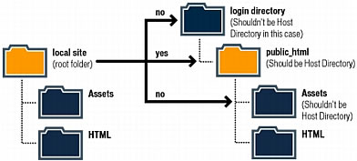

¿Que es Internet?

Definición de Internet
Internet es una red mundial formada por millones de computadoras de todo tipo y
plataforma, conectadas entre sí por diversos medios y equipos de comunicación que
mediante una serie de protocolos (TCP/IP) hacen posible que los usuarios podamos
localizar, seleccionar e intercambiar información.
La información está disponible las 24 horas del día en cualquier sitio del mundo
Aunque su uso inicial fue para fines educativos, hoy en día se usa para cualquier propósito - negocios, entretenimiento, educación, etc.
Cualquier persona puede poner información en Internet
nternet brinda oportunidades novedosas y económicas para comunicarse
Proveedores de Internet

¿Que son los proveedores de internet
Son empresas dedicadas a conectar a Internet a los usuarios, o las distintas redes que tengan,
y a dar el mantenimiento necesario para que el acceso funcione correctamente. También
ofrece servicios relacionados, como alojamiento web o registro de dominios, entre otros.
Generalmente las compañías telefónicas se encargan de brindar estos servicios, aunque existen
empresas especializadas solo en el servicio de Internet. Los proveedores de este servicio ofrecen
diferentes paquetes dependiendo de la calidad y ancho de banda de la conexión, los cuales se
contratan por parte de los clientes.
Tipos de proveedores de Internet
ISP:Internet Service Provider
Brindan conexión a internet.
Telefonía.
Televisión en algunos casos.
Soporte, entre otros.
IPP: Internet Precense Provider
Servicios de Hosting.
Nombres de dominio.
Correos corporativos.
Soporte, entre otros.
¿Que son los protocolos de aplicaccion?

Protocolos de Aplicación
Conjunto de reglas que permiten que dos o mas
entidades de un sistema se comuniquen entre ellos
para trasmitir información.
Ejemplo
Protocolo HTTP (Hypertext Transfer Protocol (Protocolo de Transferencia de Hipertexto)
Protocolo SMTP (Simple Mail Transfer Protocol (Protocolo Simple de Transmisión de Correo)
Protocolo POP (Post Office Protocol, Protocolo de Oficina de Correos)
Protocolo IMAP (Internet Message Access Protocol, Protocolo de acceso a Mensajes de Internet)
Protocolo TELNET (TELecommunication NETwork)
Protocolo BOOTP (Bootstrap Protocol)
Protocolo DNS (Domain Name System, Sistema de Nombres de Dominio)
Carpeta Local vs Remota

Carpeta Local
Esta ubicada en el disco duro de tu computadora personal.
Carpeta Remota
Esta ubicada en un servidor ubicado en un lugar remoto con acceso
a internet (Proveedor de Hosting )
Desarrolador Back-end vs Front-end

Front-end
En líneas generales, los desarrolladores frontend se encargan de diseñar y construir los elementos con los que el público
tendrá contacto. Aquello incluye los botones, menús, páginas, enlaces, gráficos y otros componentes de una página o
aplicación.
El frontend se lleva a cabo por medio de una combinación de herramientas. Si bien pueden ser muchas, las principales
son Hypertext Markup Language (HTML), JavaScript y Cascading Style Sheets (CSS). También son populares marcos de
trabajo frontend como Angular, Ember, Backbone o React.
Back-end
Como te adelantamos, el backend consiste del servidor que provee la data que se solicita, la aplicación que se encarga
de canalizarla y la base de datos que organiza la información. Por ejemplo, cuando un cliente busca zapatos en un sitio
web, este interactúa con el frontend.
Primero, los usuarios seleccionarán el ítem que desean, para luego añadirlo al carrito y autorizar la compra. Toda aquella
información se mantiene dentro de una base de datos la cual reside en el servidor. Luego de algunos días, cuando el
cliente revise el estatus de la entrega, el servidor extrae la data relevante, la actualiza y la presenta en el frontend.
Desarrollador Full Stack

Una de esas palabras que sólo pronunciándolas atrae las miradas, suena bien, y suena desconocido. Pero sin ir más lejos para encontrar el significado, un Full
Stack Developer (Full = lleno, Stack = pila), es un desarrollador que trabaja con pilas completas, desde el back hasta el front (una pila es un tipo de
estructura de datos abstracta donde lo último que entra es lo primero que sale, y el resto se apila).
Un desarrollador Full Stack Developer puede trabajar en cualquier lado sin importar las dependencias. Así, utilizando stacks completos, y con el
conocimiento suficiente, puede hacer funcionar en el back el mismo código que escribe en el front o en otro lugar.